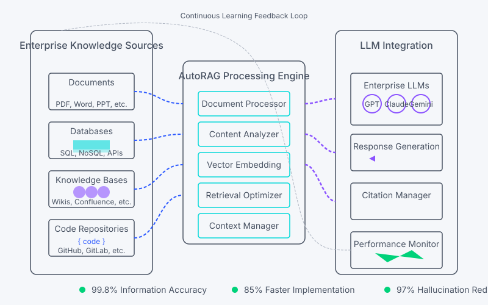
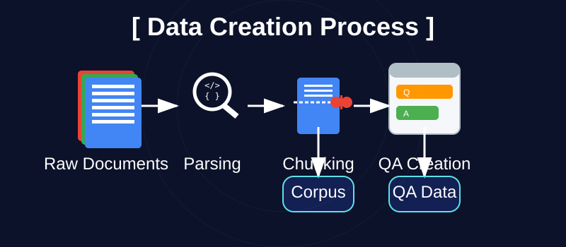

AutoRAG
Generación Aumentada por Recuperación Automatizada que potencia tu IA con integración instantánea, precisa de conocimientos y datos.

¿Qué es AutoRAG?
AutoRAG es la solución integral de Divinci AI para encontrar automáticamente el pipeline de RAG óptimo para tus datos específicos y casos de uso. A diferencia de las implementaciones genéricas de RAG, AutoRAG evalúa múltiples combinaciones de estrategias de recuperación y generación para determinar qué funciona mejor con tu contenido único.
Las implementaciones tradicionales de RAG requieren una amplia configuración manual, preprocesamiento de documentos y ajuste continuo para seguir siendo efectivas. Muchas organizaciones luchan con la selección de los módulos y pipelines de RAG adecuados para sus datos específicos, desperdiciando tiempo y recursos valiosos en configuraciones subóptimas. AutoRAG elimina estas barreras al evaluar automáticamente varias combinaciones de módulos de RAG, manejar el análisis de documentos, la optimización de fragmentación, la selección de estrategia de recuperación y la generación de respuestas, todo mientras aprende y mejora continuamente a partir de métricas de evaluación.
Con AutoRAG, tus aplicaciones de IA empresarial obtienen acceso instantáneo a la información propietaria de tu organización con una precisión y relevancia sin precedentes. El sistema crea automáticamente conjuntos de datos de preguntas y respuestas a partir de tu corpus, evalúa múltiples estrategias de recuperación y generación, e identifica la configuración óptima del pipeline, reduciendo significativamente las alucinaciones y proporcionando respuestas completamente documentadas que generan confianza con tus usuarios.

Beneficios Clave
<\!-- Circular Benefits Layout -->AutoRAG
Generación Aumentada por Recuperación Automatizada que conecta perfectamente tu IA con el conocimiento de tu organización con una configuración mínima y máxima precisión.
Integración Rápida
Conecta tu base de conocimientos en minutos, no meses, con procesamiento e indexación automática de documentos.
Recuperación Adaptativa
Nuestro sistema selecciona automáticamente la estrategia de recuperación óptima para cada consulta para máxima relevancia.
Reducción de Alucinaciones
Reduce las alucinaciones de la IA hasta en un 97% con contexto preciso y verificación de hechos en tiempo real.
Rendimiento Automejorable
Optimiza continuamente los patrones de recuperación y la generación de respuestas basándose en las interacciones de los usuarios.
Soporte Multi-Formato
Procesa diversos tipos de contenido incluyendo documentos, bases de datos, wikis y fuentes de datos estructurados.
Detalles de la Característica
<\!-- Tab Interface for Details -->Procesamiento Inteligente de Documentos y Creación de Datos
El pipeline de procesamiento de documentos de AutoRAG transforma tu contenido bruto en conjuntos de datos optimizados a través de un proceso integral de cuatro etapas: análisis de documentos, fragmentación inteligente, creación de corpus y generación automatizada de conjuntos de datos de preguntas y respuestas. Este enfoque integral garantiza tanto la extracción óptima de conocimientos como datos de evaluación precisos para la optimización del pipeline.
<\!-- Capability Visualization (SVG recommended) -->
El proceso integral de creación de datos de AutoRAG transforma documentos brutos en corpus optimizados y conjuntos de datos de preguntas y respuestas
Capacidades Clave de Nuestro Pipeline de Procesamiento de Documentos
Módulos de Análisis Avanzados
Múltiples métodos de análisis para diferentes tipos de documentos incluyendo PDFMiner, PyPDF, Unstructured, y analizadores personalizados para formatos especializados
¿Listo para Potenciar tu IA con AutoRAG?
Programa una demostración para ver cómo AutoRAG puede transformar tu IA empresarial con integración de conocimientos precisa y confiable.